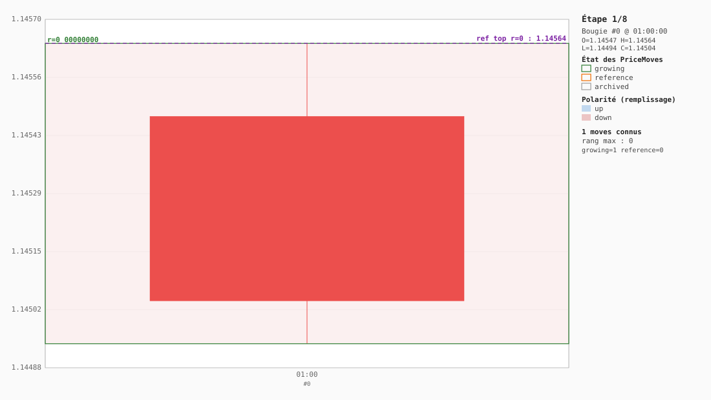
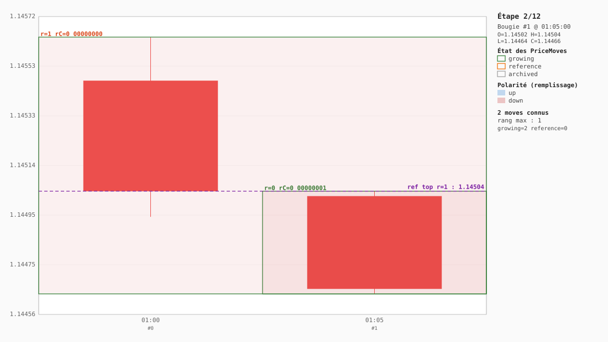
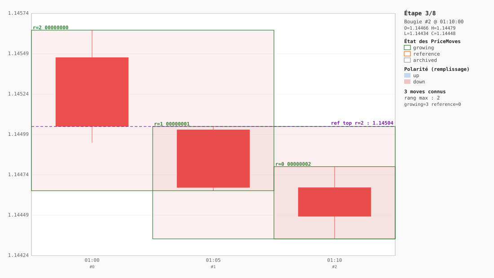
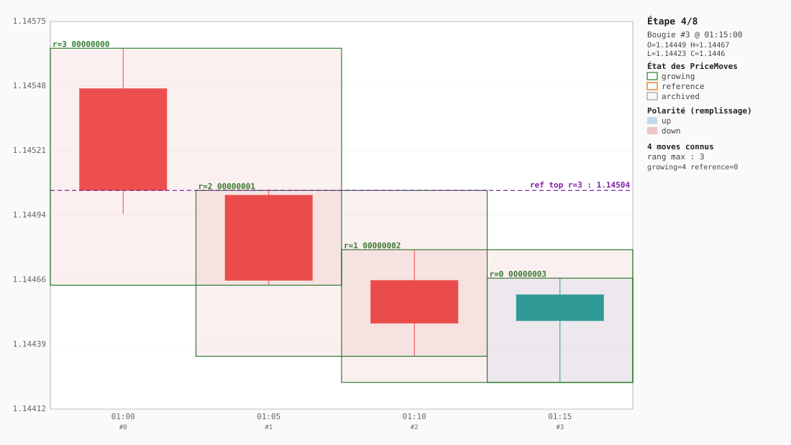
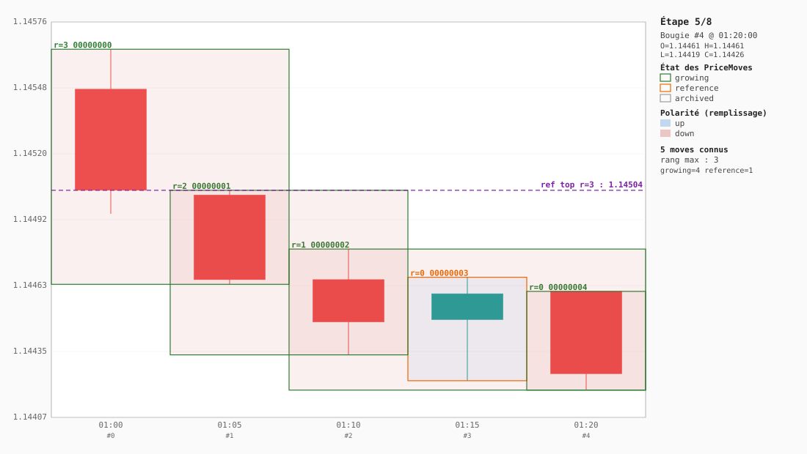
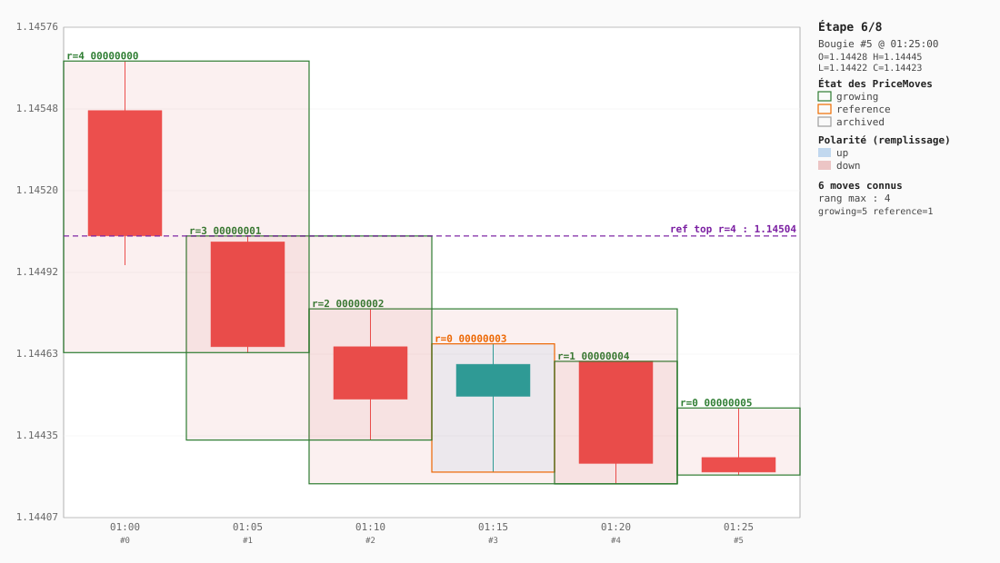
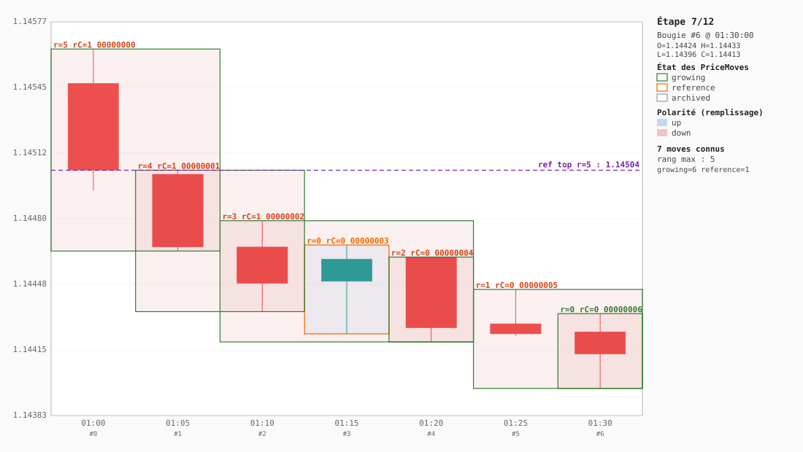
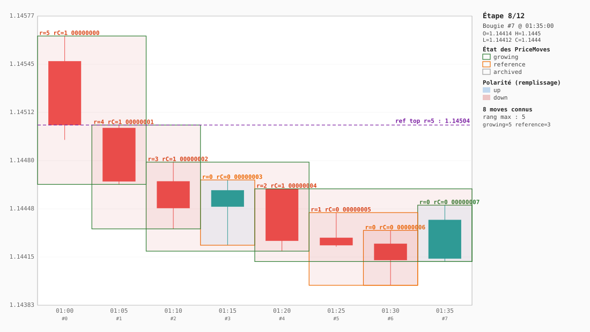

Construction progressive de la structure fractale
Fixture : eurusd-5m.json · 8 bougies · construction from scratch à chaque étape via FractalEngine.buildFromCandles.
Comment lire chaque SVG :
• Chandeliers compacts au centre (vert = up, rouge = down).
• Rectangles superposés = PriceMoves, dimensionnés en priceRange × timeRange.
• Couleur de contour : vert growing, orange reference, gris archived.
• Remplissage léger : bleu si up, rouge si down.
• Étiquette de chaque rectangle : r=<rang> <id8>.
• Ligne pointillée violette : currentReferenceLevel du PriceMove de rang max.
Étape 1 — 1 bougie ingérée

Étape 2 — 2 bougies ingérées

Étape 3 — 3 bougies ingérées

Étape 4 — 4 bougies ingérées

Étape 5 — 5 bougies ingérées

Étape 6 — 6 bougies ingérées

Étape 7 — 7 bougies ingérées

Étape 8 — 8 bougies ingérées
